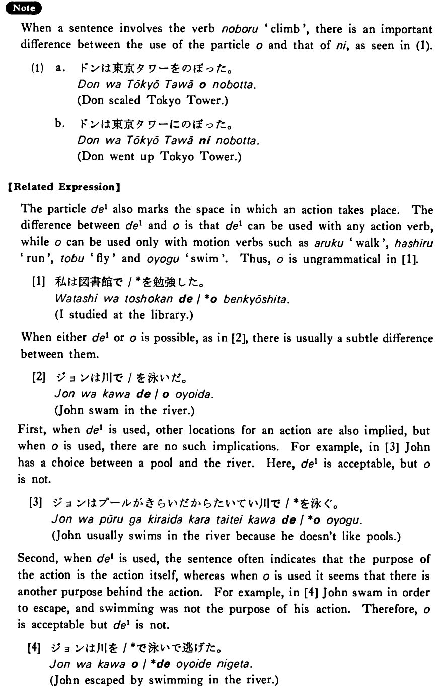

を (2) (B. 349)
- (ks).
- 私は五番街を歩いた・歩きました。
- I walked along Fifth Avenue.
- (a).
- 公園を通って帰りましょう。
- Let's go home passing through the park.
- (b).
- 鶴が湖の上を飛んでいます。
- Cranes are flying over the lake.
- (c).
- 日本では車は道の左側を走ります。
- In Japan they drive on the left side of the street.
- (d).
- そこの交差点を右に曲がって下さい。
- Please turn to the right at the intersection there.
